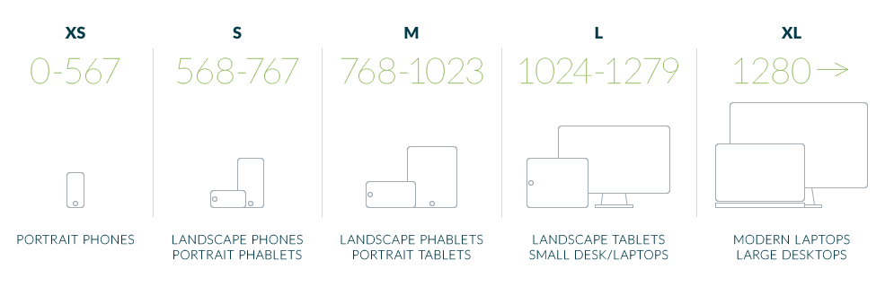

Create pages that respond gracefully to varying screen sizes and device rotation.
Every responsive stylesheet framework is only as good as its grid system. The Pwn grid was designed to give you direct control over the user interface on all screen sizes and devices.
The core element of the grid is the container, identified as a div with the class
container. It controls the width of the content, and resizes dynamically at certain
screen sizes, often referred to as breakpoints.
<div class="container">
Inside of the container is one or more rows, identified as a div with the class row.
Rows ensure the contents fit properly inside of containers.
<div class="container"> <div class="row">
Rows consist of 1 to 12 columns. These columns stretch vertically to fit content, but will not break the boundaries of the row. This ensures your columns always start at the same horizontal location on the screen, no matter the content from the previous row.
<div class="container"> <div class="row"> <div class="pwn-xs-12">
You can specify each column's behavior based on the screen size. For example, you may want a
33.3% width column to be 100% on an iPhone and 50% on an iPad. These behaviors are determined
by the style applies to each column, in the format
pwn-[minimum_screen_size]-[column_count].
<div class="container"> <div class="row"> <div class="pwn-xs-12 pwn-md-6 pwn-lg-4">
Pwn containers, using the syntax pwn-[screen_size]-[column_width], wrap your content.
A pwn container can be 1 to 12 columns in width. The column_width values in a single
row should add up to 12 to fill the entire row. Shown below are the 12 different available column
widths, distributed to show several ways to fill a row.
The light orange color shows the padding inside each pwn container, and the blue shows the usable space for your content. The dashed red lines outline the column boundaries.
There are five breakpoints that allow you to tailor your content to specific screen sizes. Each of these breakpoints were designed with specific devices in mind, to ensure your users' most common use cases are covered.
Older phones use a 1-to-1 pixel-to-point ratio, meaning 1 pixel on the screen equals one pixel in your website design. High DPI screens convert points to some ratio of pixels. For example, iPhone 4 and higher (excluding iPhone 6 Plus) use a 2:1 ratio of pixels-to-points. Thus, an iPhone 4 has a 320 point width screen, but it uses 640 pixels to render those points, giving the user a sharper user interface and overall better experience. Other phones, such as the iPhone 6 Plus, use higher ratios. The Samsung Galaxy S6 uses a 3:1 ratio, rendering 480 points in 1,440 pixels.
The Pwn framework eliminates your need to understand this. Simply use our built-in classes to target certain resolutions, and your website will look great on any device.

Extra small screens can be targeted with the pwn-xs-[column_size] class. These screens
are 567 points and below in width. This includes most smartphones in portrait orientation.
Small screens can be targeted with the pwn-sm-[column_size] class. These screens
are from 568 to 767 points in width. This includes most modern smartphones in landscape
orientation and some large smartphones (also known as phablets)
Medium screens can be targeted with the pwn-md-[column_size] class. These screens
are from 768 to 1023 points in width. This includes most tablets in portrait orientation and some
phablets in landscape orientation.
Large screens can be targeted with the pwn-lg-[column_size] class. These screens
are from 1024 to 1279 points in width. This includes most tablets in landscape
orientation and some smaller desktop/laptop screens.
Extra large screens can be targeted with the pwn-xl-[column_size] class. These screens
are 1280 points in width and above. This includes the most modern laptops and larger desktop
monitors.
You can hide page elements on certain screen sizes with the hidden-[screen_size] classes.
hidden-xs Hide on Extra Small screenshidden-sm Hide on Small screenshidden-md Hide on Medium screenshidden-lg Hide on Large screenshidden-xl Hide on Extra Large screensThese classes can be combined to hide elements on more than one screen size.